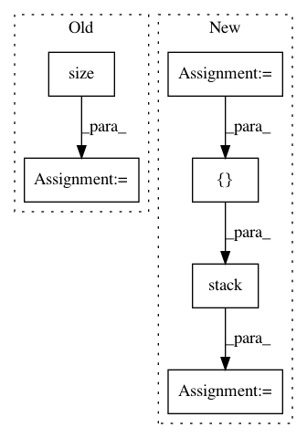

5750090fcd4a6718608c7357e3890f5b2a545ae0,layers/tacotron.py,Decoder,forward,#Decoder#Any#Any#,235
Before Change
memory_input = torch.div(outputs[-1] + memory[t-1], 2.0)
// add a random noise
noise = torch.autograd.Variable(
memory_input.data.new(memory_input.size()).normal_(0.0, 0.5))
memory_input = memory_input + noise
// Prenet
processed_memory = self.prenet(memory_input)
After Change
stop_token_input = decoder_input
// stop token prediction
stop_token_input = torch.cat((output, current_context_vec), -1)
stop_output = self.stop_token(stop_token_input)
// predict mel vectors from decoder vectors
output = self.proj_to_mel(output)
outputs += [output]
alignments += [alignment]
stop_outputs += [stop_output]
t += 1
if (not greedy and self.training) or (greedy and memory is not None):
if t >= T_decoder:
break
else:
if t > 1 and is_end_of_frames(output, self.eps):
break
elif t > self.max_decoder_steps:
print(" !! Decoder stopped with "max_decoder_steps". \
Something is probably wrong.")
break
assert greedy or len(outputs) == T_decoder
// Back to batch first
alignments = torch.stack(alignments).transpose(0, 1)
outputs = torch.stack(outputs).transpose(0, 1).contiguous()
stop_outputs = torch.stack(stop_outputs).transpose(0, 1).contiguous()
return outputs, alignments, stop_outputs
In pattern: SUPERPATTERN
Frequency: 4
Non-data size: 6
Instances
Project Name: mozilla/TTS
Commit Name: 5750090fcd4a6718608c7357e3890f5b2a545ae0
Time: 2018-03-22
Author: egolge@mozilla.com
File Name: layers/tacotron.py
Class Name: Decoder
Method Name: forward
Project Name: OpenNMT/OpenNMT-py
Commit Name: 31e7f40c3381aac21e8665d0b5706bceddd9de94
Time: 2017-06-25
Author: srush@sum1gpu01.rc.fas.harvard.edu
File Name: onmt/Models.py
Class Name: Decoder
Method Name: forward
Project Name: rusty1s/pytorch_geometric
Commit Name: 5ffa38fca42bb3fbee030f4b80264e0f4910a49c
Time: 2018-01-16
Author: matthias.fey@tu-dortmund.de
File Name: torch_geometric/datasets/utils/tu_format.py
Class Name:
Method Name: read_adj
Project Name: rusty1s/pytorch_geometric
Commit Name: fb691c1c8f00b7611f72709c76c62def5994bb75
Time: 2019-04-02
Author: matthias.fey@tu-dortmund.de
File Name: examples/pointnet++.py
Class Name: Net
Method Name: forward